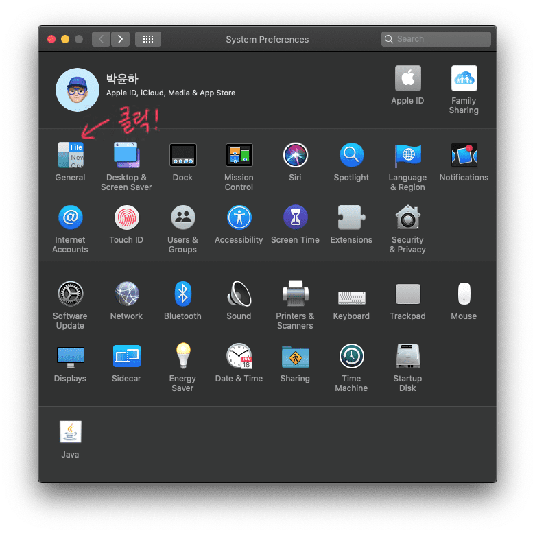
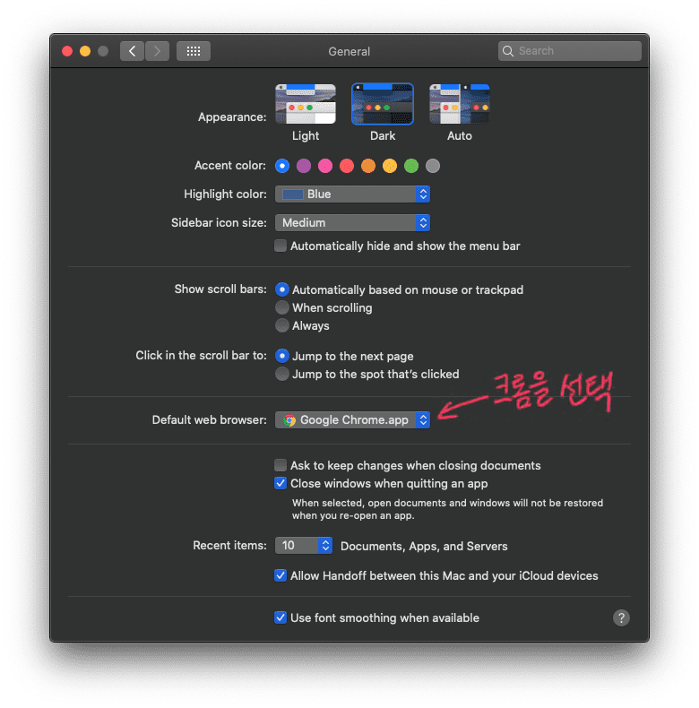

맥에서 기본 브라우저 변경하기
맥에서 링크를 열거나 인터넷을 이용할 떄 사용하는 브라우저를 자신이 원하는 것으로 설정해보자.

자, 기본 브라우저를 크롬으로 변경해보자 #
- 맥에서 시스템 환경설정(System Preferences)를 열고, 일반(General)을 클릭한다.
- "기본 웹 브라우저" 팝업 메뉴를 클릭하고 크롬을 선택한다.


이제 다른 앱에서 웹페이지를 열 때 우리가 기본으로 설정한 크롬 브라우저를 통해 페이지가 열릴 것이다.
마지막 업데이트 날짜:
이 포스트를 개선해주세요!